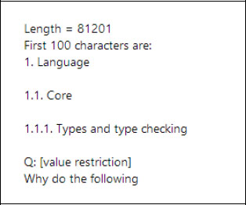
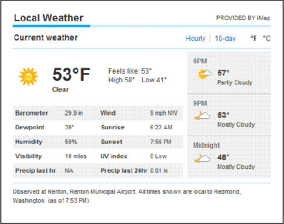
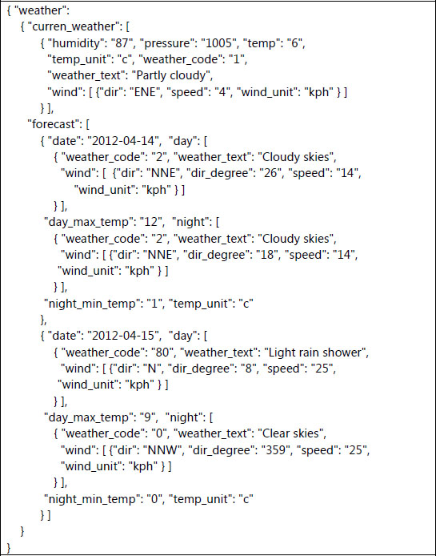
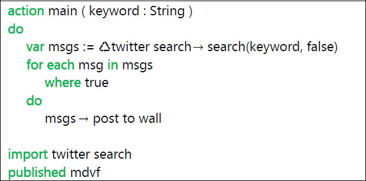
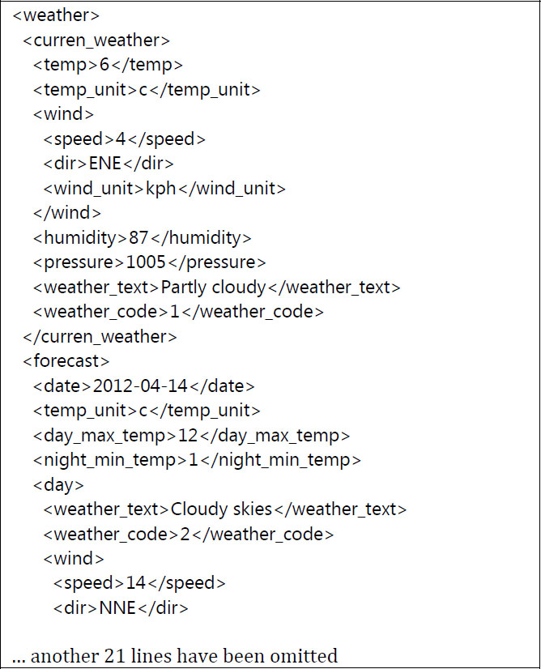

Most mobile devices can be connected to the internet, either via a Wi-Fi connection or by using the data services of the cellphone company. Many useful scripts already exist to retrieve information from websites on the internet. By using the facilities of TouchDevelop, you can easily construct the additional scripts which extract the specific information you might need. Another common use of an internet connection is to share information via one’s Twitter or Facebook account. TouchDevelop provides facilities for uploading messages to your account.
4.1 URLs and webpages
4.1.1 Working with URLs
The TouchDevelop API provides an easy way to interact with software installed on your device to access the web. Most of these interactions begin with a URL. Here is an example of one of the simplest things we can do in a script – opening the web browser at a particular webpage.
If not
web→is connected
then
“Sorry, you don’t have an internet connection!” → post to wall
time → stop
else
// do nothing
Most web interactions in a TouchDevelop script need a URL to specify a web address. Two API methods which assist in working with URLs are listed in Table 4-1. Frequently, it is necessary to include some special characters in a URL.
Table 4-1
Converting URLs
Method | Description |
|---|---|
web→url encode(s : String) : String
| Encode special characters so that they can be included in a URL. |
Web→url decode(url : String) : String
| Decodes a URL back to a normal string containing special characters. |
4.1.2 Creating and using web-based links
One use of the Link datatype in TouchDevelop is to save links to people in the form of their email addresses or their phone numbers. This usage is covered in Chapter 8. Another use is to save links to materials found on the web, such as videos, pictures, and webpages in general. The web resource in the TouchDevelop API provides methods for creating links in the latter category. Some more methods will search for webpages or web resources and return a collection of links to the results. These methods are listed in Table 4-2.
The Link datatype combines additional information with an address such as a URL. It can optionally have an associated name and a location (which is usually relevant for a photograph but is certainly not restricted to photographs). Methods are provided for setting and getting this additional information.
Note that no checking on the validity of the URL is performed when the Link instance is created. The URL is simply held as a string, and can be accessed as a string by using the address method.
Example: The script flickr search (/atue) provides an example of a library which creates a Link Collection instance containing references to particular kinds of images, and the script flickr slideshow (/fluo) uses that library to generate a slideshow of images on a theme provided by the user.
Table 4-2
Creating web links
Method | Description |
|---|---|
web→link image(url : String) : Link
| Create a link to a picture |
web→link media(url : String) : Link
| Create a link to an audio file or a video |
web→link url(name : String, url : String) : Link
| Create a link to a webpage and associate a name with this link |
web→search(terms : String) :
Link Collection
| Use Bing to search for webpages matching the search terms |
web→search images(terms : String) : Link Collection
| Use Bing to search for images matching the search terms |
web→search images nearby(terms : String, location : Location, distance : Number) :
Link Collection
| Use Bing to search for images matching the search terms and associated with a location within a given distance of a specified location |
web→search nearby(terms : String, location : Location, distance : Number) :
Link Collection
| Use Bing to search for webpages matching the search terms and associated with a location within a given distance of a particular location |
web→search news(terms : String) : Link Collection
| Use Bing to search for news items matching the search terms |
web→search news nearby(terms : String, location : Location, distance : Number) :
Link Collection
| Use Bing to search for news items matching the search terms and associated with a location within a given distance of a specified location |
Using the wall with web-based links
The wall can be used to hold links to websites in general or to various kinds of resources that may be downloaded. For example, to display an image when an instance of the Link type has been provided, code like the following may be used.
// link (of type Link) refers to an image on a website
var
pic := web → download picture(link → address)
wall → set background picture(pic)
Here are some more examples. The following script lines (extracted from the script /hrvg held on the TouchDevelop Samples website) demonstrate some interesting possibilities.
// 1. This creates a basic internet link which is opened in the browser
// when the link is tapped
// 2. This will load and display an image from the web
// when the link is tapped
{kind=link}
// 3. You can also link to a movie or a sound file through the link
// media method. It will be played when the link is tapped
web → link media(
WP7Pex4FunPeliNikolai_ch9.wmv") → post to wall
If the first of the examples above is run as a script, the result displayed on the screen looks similar to Figure 4-1. Tapping the ‘go’ button on the right causes the webpage to be displayed.
Figure 4-1
Posting a Webpage Link to the wall
Running the second example displays the image which is downloaded from the web. The result of running it as a script looks similar to Figure 4-2. (The image looks fuzzy because the original is a small low resolution image which gets scaled up in size before being displayed the screen.)
Figure 4-2
Posting a link to an image on the wall
4.1.3 Checking the internet connection
Your device can usually access the internet via a Wi-Fi connection or through a cellphone connection. However there will be occasions when there is no internet connectivity. A script should test whether there is connectivity before proceeding to try to access web resources. The API method call
web → is connected
returns true or false to indicate the current situation.
The following API method call should provide information about the kind of connection, if one exists. The result will be one of the strings “unknown” “none” “ethernet” “wifi” or “mobile”.
web → connection type
Finally, the script can discover the name of the Wi-Fi service or the cellphone service which is handling internet requests. The following API method call returns a string with the name of that service, if there is one. If no name can be found, the result is an empty string.
web → connection name
4.2 Downloading and uploading files
If a script accesses the internet, it is quite likely that information in some form needs to be downloaded. Sometimes information needs to be uploaded too. The TouchDevelop API provides several upload and download methods appropriate for accessing different kinds of web resources. These methods are summarized in Table 4-3 and then described in more detail in the following subsections.
Table 4-3
Uploading/downloading to websites
Method | Description |
|---|---|
web → download(url : String) : String
| Uses a HTTP GET request to obtain a HTML-encoded webpage as a string. |
web → download json(url : String) : Json Object
| Uses a HTTP GET request to read a JSON data structure |
web → download picture(url : String) : Picture
| Downloads a picture |
web → download song(url : String, name : String) : Song
| Creates a streamed song file; the download is delayed until the song is played |
web → download sound(url : String) : Sound
| Downloads a sound in WAV format |
web → upload(
url : String, body : String) : String
| Uses a HTTP POST request to upload string data to a website service; the result is a response string from that service |
web → upload picture(url : String, pic : Picture): String
| Uses a HTTP POST request to upload a picture to a website service; the result is a response string |
4.2.1 Downloading a text file or downloading HTML
The simplest format for a web resource is a text file. If the URL ends with the suffix “.txt” or “.text” then the web resource is almost certainly a plain ASCII (or UTF8) text file. However the URL does not necessarily need either of these suffixes to refer to a text file.
A webpage which contains HTML is also a text file; it is simply text which includes extra commands to specify the structure and the format of the webpage when displayed by a browser. If it is useful, the raw HTML can be read as though it were a text file.
A TouchDevelop script can download a text file or a HTML page and read it into a String variable using script lines similar to those shown in this example:
action
main( )
var
s := web →
if
s → is invalid
then
"unable to read webpage" → post to wall
else
// … proceed to use the string s
"" → post to wall
s → substring(0,100) → post to wall
"First 100 characters are:" → post to wall
("Length = " || s → count) → post to wall
When this script is run, the result looks as shown in Figure 4-3. Most likely, though, your script will proceed to do something more complicated with the string than just display the total length and the first 100 characters.

Figure 4-3
Downloading a text file
4.2.2 Downloading a picture
A variety of formats are used for encoding pictures as computer files. The commonly used formats are JPEG, GIF, PNG, BMP, TIFF and WMP. They are all supported by TouchDevelop. If the filename or URL ends with the suffix “.jpg”, “.jpeg”, “.gif”, “.png”, “.bmp” or “.wmp” then one of these formats has been used, and the methods provided in the TouchDevelop API should be able to download and manipulate the picture.
The script statements are similar to before, but use a different method so that the result is obtained as a Picture value (and not as a String value).
action
main( )
var
pic := web → download picture(
{kind=link}
if
pic → is invalid
then
"Unable to download picture" → post to wall
else
// … proceed to use the picture pic in some way
pic → post to wall
("Image dimensions = " || pic → width || " x " || pic → height) →
post to wall
Running this particular script yields the result shown in Figure 4-4.

Figure 4-4
Picture download
4.2.3 Downloading sounds and music
TouchDevelop and the Windows phone software support two kinds of audio files – short sound clips and longer audio tracks which would usually contain music (or spoken voice). In TouchDevelop, these correspond to values with type Sound and type Song respectively.
If the filename or URL ends with the suffix “.wav” then the file contents are in the ‘Waveform Audio File’ (WAV) format and it is material that can be downloaded as a Sound value. A Sound value can only be created from a WAV file. If the suffix is “.mp3
” then the material is in an audio format commonly used for music and the spoken word. This material can be downloaded as a Song value.
Some code to download and play a sound effect is shown below. (The sound effect used in this example comes from the website “Partners in Rhyme” which provides royalty-free music and sound-effects.)
action
getSound( )
var
snd := web → download sound( "
http://www.sound-effect.com/pirsounds/WEB_DESIGN_SOUNDS_WAV1/SOUNDFX/TOYLASER.WAV
" )
if
snd → is invalid
then
"unable to download sound" → post to wall
else
// … proceed to use the sound value snd
snd → set volume(0.7)
snd → play
("Duration = " || snd → duration) → post to wall
Example: A script to access and play a song is available as Stream mp3 from internet (/ncwo). The script includes some extra features to make it a bit more useful. These are events to suspend the playback and to stop the playback permanently. When the script is run, the URL can be provided as an argument. If no URL is provided, the last used URL is used again.
4.2.4 Uploading strings and files
Two API methods are available for uploading material to a website. One method uploads a string and the other uploads a picture. Both use the HTPP POST protocol for the uploads. Typically, uploads will be performed when interacting with a website which follows the REST guidelines (as covered below).
Here are sample statements which use the API method call for uploading a string.
var
info := “name=an+other&age=37&car=Ford+Mustang”
// upload key-value pairs in the info string to website specified by the url
var
response string := web → upload( url, info )
The website which receives the POST request will pass the string onto a program for processing and a string returned by the program comes back as the result of this API call.
Uploading a picture is similar. The sample script web stuff (/hrvg) is an example of uploading a picture of a QR code in the JPEG format to a website.
4.3 Downloading structured data
The internet makes a wealth of information available to your script. The difficult part is in extracting the information you need from a website. Suppose that you want your script to look up the current temperature in some location. There are many websites you could use to find this information, one of them is
local.msn.com
. For example, if you point your browser at the URL
http://local.msn.com/weather.aspx?q=redmond-wa&zip=98052
, it will display a webpage containing much information about current weather conditions in Redmond, but where only a tiny part of the page shows the temperature. A snapshot showing just a small part of this web page is reproduced in Figure 4-5.
We can, in principle, use the API call web→download to fetch the HTML code for the webpage as one very long string of characters. Then we can write some statements which search the HTML code for the little snippet of information that we need. In this example, we need to search the code for a sequence of characters with a structure like the following.
<span class="curtemp">53°F</span>
Here the two characters ‘53’ are the data we want to extract and convert to the number 53. You have to study the HTML code for the website to figure out what sequence of characters would be sufficient to accomplish the task, and no two websites are going to be the same. The script may also need to untranslate characters which have been replaced by HTML escape sequences. For example, an ampersand character displayed on a webpage appears in the HTML code as the five characters “&”. The API provides two methods for converting between special characters and their HTML escape sequences. These are web→html decode and web→html encode.

Figure 4-5
Snapshot of a weather webpage
The kind of programming which analyzes webpages to extract information is known as web scraping (or web harvesting). You should write code like this only if there is no alternative and, even then, think twice. This is a job best left for professionals who have access to special software, and it is a job which has to be repeated whenever the web designers choose to change the layout of the website being accessed.
What can we do instead? The best answer is to find an internet site which serves up the information you need in a more easily digestible format. Two formats, widely used for delivering information in a systematic and simple manner, are XML and JSON.
Both these formats are supported by TouchDevelop, and will be explained with simple examples in the following sections of this chapter. In the particular case where we need to find the current weather in some location, there are several suitable websites. One of them is ‘The Weather Channel’ but, unfortunately access to this service requires a monthly subscription. A free alternative is Weather2 which supplies both JSON and XML:
http://www.myweather2.com/developer/
4.3.1 Downloading information in JSON format
JSON is short for JavaScript Object Notation. It is a text format which borrows notations and data structuring ideas from the JavaScript scripting language. It is a format which has been designed to be easy for processing by computer software (and therefore by TouchDevelop scripts too), but is human-readable too.
An example of some data expressed in JSON format appears in Figure 4-6. It is weather data obtained from the weather2 service.
There are only a few simple rules for what constitutes a valid JSON representation of information. A file in JSON format contains the following elements.
- Numbers and Strings
- Boolean values (true or false)
- Arrays – written as a sequence of array elements separated by commas, with the whole sequence enclose in square brackets
- Objects – written as an unordered collection of key-value pairs where a colon separates each key from the value, each pair is separated from the next by a comma, and the whole collection is enclosed in curly braces; the keys must be written as strings and they must be distinct from each other.
- The special value null, meaning empty.
Referring back to Figure 4-6, we can see that the figure shows an object with just one key-value pair, where the key is “weather” and the associated value is another object. That object contains two key-value pairs; one key is “curren_weather” and the other is “forecast”. The value associated with “curren_weather” is an array that contains just one element, which is an object. The value associated with “forecast” is an array containing two elements, and the two elements are objects with identical structures. (The elements do not need to have the same structure, or even have the same types, but processing the JSON file is easier if they do.)
- If we have found a website which provides results in JSON format, we can access it using the call web→download json. Here is an example invocation.

Figure 4-6
Weather data in JSON format
var
jobj := web→download json(
output=json&query=SW1")
It will download JSON data similar to that shown in Figure 4-6. (The ‘X’ shown after ‘uac=’ in the URL must be replaced by a user access code which is given to you only if you register with the weather2 website.)
The value retrieved by this API call has the data type Json Object. The data type provides many methods for accessing information from inside a JSON object. These methods are listed in Appendix C. Using these methods, here is how we could obtain today’s temperature from the JSON object shown in Figure 4-6. The code is shown as a series of very simple steps.
// assume jobj has been read using the call previously shown
if
jobj → is invalid
then
"unable to download JSON data" → post to wall
else
var
w := jobj → field("weather")
var
cw := w → field("curren_weather")
// get first element of array
var
cw0 := cw → at(0)
// get temperature as a Number
var
temp := cw0 → string("temp") → to number
// get temperature units as a String
var
units := cw0 → string("temp_unit")
("Today’s temperature is " || temp || units) → post to wall
All we had to do was look at one example of the JSON data produced by our weather query. From that example, it was easy to figure out how to extract the information we needed. (Of course, we could have also read the documentation provided by the service provider.)
Two popular services which provide results in the JSON format are Flickr and Twitter. Two scripts in the TouchDevelop Samples collections implement libraries for using these services. A trivial script which searches for tweets containing a particular keyword (or #tag) is shown in Figure 4-7.
The code for the library can be found under the name twitter search (/stlm). It extracts enough information from each tweet to format it as a message with an author name, a picture of the author, the date when the tweet was posted, plus the message itself.
4.3.2 Downloading information in XML format
XML is short for Extensible Markup Language. It is a notation for adding markup to a text document so as to show its structure. It provides an alternative to JSON for delivering results from web services in a format which can easily be processed by software and which is moderately easy for a human to read.

Figure 4-7
Accessing Twitter with a library
An incomplete example of the XML produced by the weather2 service is shown in Figure 4-8. The information is the same as shown in Figure 4-6 but, because it is rather more voluminous, only the first 25 lines are displayed. As seen in the example, the start of a component (a logical unit) in the document is flagged by an opening tag such as <weather>. The end of that component is flagged by a matching close tag such as </weather>. The components can be nested, as seen in the figure.
An opening tag can include attributes, such as this one <font name=”Courier” size=”12”>, though this possibility does not occur in the weather data.
Downloading XML data requires a call to web→download to fetch the data as a string, and then a call to web→xml to parse the string as XML, as in the following example.
developer/forecast.ashx?uac=X&output=xml&query=SW1"))
The result of the code is a value with the datatype Xml Object. This datatype provides methods for traversing the XML object and extracting various components. The methods are listed in Appendix C.
Extracting the current temperature from XML shown in Figure 4-8 can be programmed as follows.

Figure 4-8
Weather data in JSON format
// assume xobj has been read using the call previously shown
if
xobj → is invalid
then
"unable to download XML data" → post to wall
else
var
cw := xobj → child("curren_weather")
// get temperature
var
temp := cw → child("temp") → to string
// get temperature units
var
units := cw → child("temp_unit") → to string
("Today’s temperature is " || temp || units) → post to wall
As with JSON, it is fairly easy to figure out how to extract the desired information just by looking at an example of the XML data. However, the structure of the XML is almost always rigidly defined by a DTD (Document Type Definition) which specifies the tag names to use and how they are allowed to nest inside other tagged sections. It is preferable to consult the DTD when developing scripts for processing XML.
4.4 REST guidelines and web requests
Many web services implement those services in a manner which follows guidelines known as REST. It is short for REpresentational State Transfer. Such a web service is often described as being RESTful. A starting point for reading about the REST guidelines is provided by Wikipedia at this URL:
http://en.wikipedia.org/wiki/REST
.
In particular, HTTP GET and POST requests are used to access many of the facilities of a RESTful web service and the API calls provided for uploading and downloading to or from the web may be adequate. The HTTP PUT and DELETE requests are not supported on the Windows Phone platform and therefore cannot be generated by a TouchDevelop script. Many RESTful web services provide alternatives to the PUT and DELETE requests.
The API method web→create request may be used to construct a general HTTP request. The request is constructed as an instance of the Web Request datatype. When the request is sent to the web service, the result comes back as an instance of the Web Response type. The methods of these two datatypes are summarized in Table 4-4 and Table 4-5. (Methods available for all datatypes are omitted from these two tables.)
Table 4-4
Methods of Web Request datatype
Method | Description |
|---|---|
header(name : String) : String
| Gets the value of a header identified by name |
header names : String Collection
| Gets the names of all the headers |
method : String
| Returns the HTML method: “get” or “post” |
send : Web Response
| Sends the request and waits for a response |
set compress(value : Boolean) : Nothing
| If the argument is true, the request content is compressed with gzip (and the header is updated). |
set content(content : String) : Nothing
| Sets the content of a POST request |
set content as json(json : Json Object) : Nothing
| Sets the content of a POST request as a JSON data structure |
set content as picture(picture : Picture, quality : Number) : Nothing
| Sets the content of a POST request as a JPEG image; the quality parameter ranges from 0 for low quality (maximum compression) to 1 for best quality. |
set content as xml(xml : Xml Object): Nothing
| Sets the content of a POST request as an XML data structure |
set credentials(name : String,password : String): Nothing
| Sets the name and password when the website requires authentication; the URL for the request must specify HTTPS protocol. |
set header( name : String,
value : String): Nothing
| Sets a HTML header value. |
set method( method : String) : Nothing
| Sets the method; it must be “get” or “post”. |
set url(url : String) : Nothing
| Sets the URL. |
url : String
| Returns the URL used in this request |
An example of constructing a web request and using the response is provided by the script cosm services (/ybnr).
Table 4-5
Methods of Web Response datatype
Method | Description |
|---|---|
content : String
| Gets the content of the response body as a string |
content as json : Json Object
| Gets the content of the response body as a JSON data structure |
content as picture : Picture
| Gets the content of the response body as a picture |
content as sound : Sound
| Gets the content of the response body as a sound in WAV format |
content as xml : Xml Object
| Gets the content of the response body as an XML structure |
header(name : String) : String
| Gets value of the HTML header with the given name |
header names : String Collection
| Gets the names of the headers |
request : Web Request
| Gets the web request which was used |
status code : Number
| Gets the HTTP status code associated with the request |